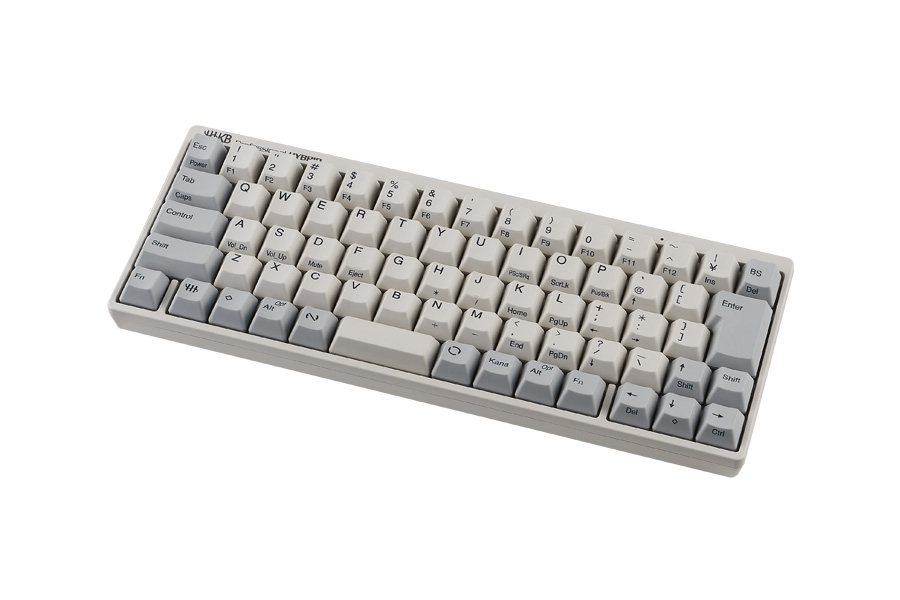
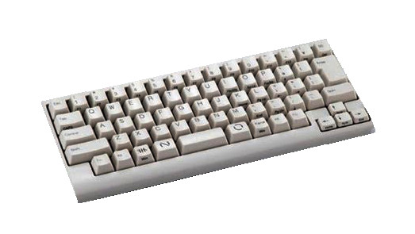
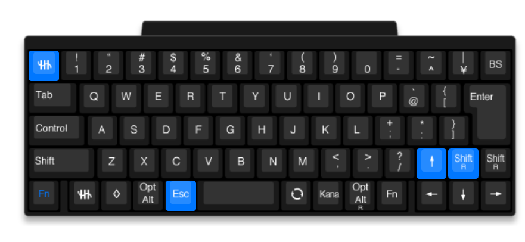

HHKB Pro hybrid と HHKB Lite2
先日 HHKB Pro hybrid (以降 hybrid) を買ったので、思ったことを書いておく。 なお、HHKB Lite2(以降 Lite2) を 20 年程度使っていたので、 HHKB 自体の経験値はそこそこある。 ただし、Lite2 なので細かいところが本家と比べて色々と違うのは理解している。
HHKB Lite2 の方が良い
20 年程度使っているものと、 まだ 1 年も使っていないキーボードのどちらが使い易いかを比べるのも変な話な気もするが、 今のところ圧倒的に Lite2 の方が使い易い。 なお、どちらも日本語配列版を使っている。
hybrid と Lite2 を比べると、以下の点が非常に影響が大きいということに気付いた。
- 手前フレームの幅
- 右シフトキー周辺のキー配置
どちらもレイアウトに関する点である。 そして、hybrid のレイアウトは 2008 年発売の HHKB Professional JP のレイアウトを踏襲している。 よって、 2008 年のレイアウトに対して何をいまさらと思う人が多いと思う。 まぁ、あくまでも個人的な感想ということで、その辺りは大目に見て欲しい。
なお Lite2 の発売は 2001 年であり、HHKB Professional JP よりも早い。
hybrid と Lite2 のレイアウト
以下に hybrid と Lite2 のレイアウトを載せる。
パッと見では、 hybrid の方がよりスマートに見える。 しかし、hybrid の方が使い勝手が良かった。
- HHKB hybrid

- HHKB Lite2

手前フレームの幅
hybrid は、キーボードの四隅のフレームが非常に狭く、コンパクトな造りになっている。 これは、コンパクトさを一つの特徴にしている HHKB においては長所と言える。
しかし、このフレームの幅が実は非常に重要だということに hybrid を使うことで気付いた。
なにが重要かというと、Lite2 の手前のフレームに手をわずかに掛けておけることにより、 最前列キーの誤入力を防げる。 逆にいうと、 hybrid ではこのフレームの幅が狭いため、最前列キーの誤入力が多くなる。
ちなみにここでいう誤入力とは、キーを押し間違えるのではなく、 何かのキーを押そうとした際に、意図せずに別のキーを押してしまうことを指す。 具体的には、 hybrid では奥側のキーをタイプする際に最前列のキーを手の平で押してしまう。
どうやら Lite2 のフレームは、 僅かではあるがパームレストの役割りを担っていたようだ。 高々 2cm 弱のフレーム幅ではあるが、自分にとっては重要だった。
右シフトキー周辺のキー配置
コンパクトなキーボードにありがちな欠点に 「フルサイズキーボードと比べてキーの配置が独特になっている」ことがある。
一方 HHKB は、コンパクトなキーボードでありながら、 フルサイズキーボードと同じキー配置になるのが HHKB のセールスポイントだと 自分は理解していた。
だが、 hybrid の右シフトキー周辺のキー配置がなにやらゴチャゴチャしている。
この原因は、Lite2 では方向キーを通常のキーとは少し離した独立した位置に配置しているのに対し、 hybrid では通常のキーと同じ領域に無理矢理詰め込んでいるためだ。
これによって、 hybrid のフレームサイズは Lite2 に比べてよりコンパクトになっているが、 右シフトキー周辺の配置がイリーガルになってしまっている。
これは、「フルサイズキーボードと比べてキーの配置が独特になっている」という コンパクトなキーボードにありがちな欠点そのものだ。
これによる一番の問題は、右シフトが押し難い(間違えて↑キーを押してしまう)ということだ。 まぁ、これは慣れの問題ではあるが 前述の通り「フルサイズキーボードと同じキー配置になる」のが HHKB のセールスポイントだと 個人的に認識していたので、これは非常にショックだった。
hybrid の方が Lite2 よりもコンパクトではあるが、 上記の通りそのコンパクトさも自分にとっては短所に繋ってしまっているので、 このレイアウトはなんのメリットもない。
キーマップカスタム
hybrid のセールスポイントの一つに、キー配置をカスタム出来ることがある。
右シフトキー周辺の問題に対応するため、 このキーマップカスタム機能を利用してキーを次のように変更した。

- ↑キーを右シフト
- ＼キーを↑キー
↑キーの位置が、←↓→の位置との相対的に変な位置にあるのが気になるが、 ↑キー自体はあまり使わないので、一旦これで運用している。
ついでに、以下を変更している。
- ESC を全角半角
- 全角半角を ESC
これは、OS 側で US 配列にした場合に ESC の位置に ` キーをセットするための設定で、 こうすることでフルサイズの US 配列により近付けることができる。
従来は OS 側の設定で「ESC、全角半角の入れ替え」を行なっていたが、 キーボード側の設定で入れ替えられるようになったため、 OS に依存せずにキーの入れ替えが行なえる。
まとめ
近年のコンパクトな日本語配列キーボードは、 HHKB hybrid と似たようなレイアウトを採用していることが多い気がする。
よって、 HHKB hybrid に慣れることによって、 今後のキーボード選びの際に苦労しないことが考えられる。 とはいえ、長年使ってきたキーボードとの差異は違和感を覚える。
自分好みのキーボードレイアウトがある場合、 究極的にには近年流行りの自作キーボードが選択肢になる。 なお、自作キーボード kit の多くは HHKB と同程度、 あるいは HHKB より少し安めの値段で購入できる。
HHKB hybrid を購入する際も、 自作キーボード kit の購入を検討した。 そして、様々な要因を検討した結果、 Bluetooth 接続対応の自作 kit がほぼ無いことが決定打になり、 今回は HHKB を選択することになった。
次回は今回の経験を踏まえて、自作キーボードに挑戦したいと思う。
まぁ、次回がいつになるかは全くの未定なのだが。